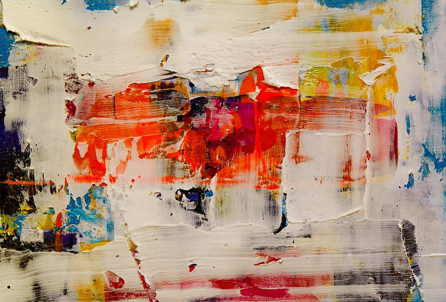
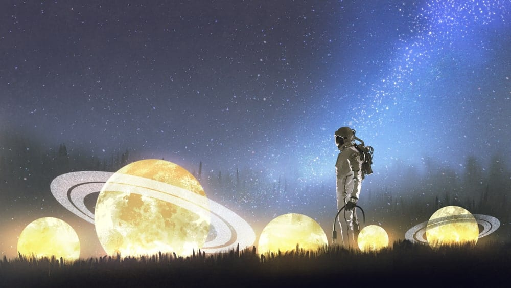
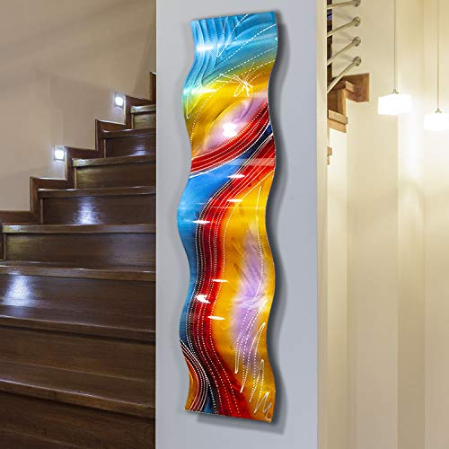
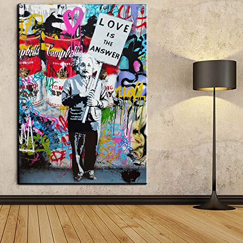

- Definition
- Classifications
- History
- Visual arts
- Architecture
- Ceramics
- Conceptual art
- Drawing
- Painting
- Photography
- Sculpture
- Literary arts
- Performing arts
- Dance
- Music
- Theatre
- Multidisciplinary artistic works
- Other arts
- Applied arts
- Video games
|
DESCRIPTION:
Art is a diverse range of (products of) human activities involving creative
imagination to express technical proficiency, beauty, emotional power, or conceptual ideas.
The arts can refer to common, popular or everyday practices as well as more sophisticated and
systematic, or institutionalized ones. Art is generally understood as any activity or product done by people with a communicative or aesthetic purpose—something that expresses an idea, an emotion or, more generally, a world view.
It is a component of culture, reflecting economic and social substrates in its design. It transmits ideas and values inherent in every culture across space and time.
Its role changes through time, acquiring more of an aesthetic component here and a socio-educational function there.
Art, in its broadest sense, is a form of communication. It means whatever the artist intends it to mean, and this meaning is shaped by the materials, techniques, and forms it makes use of, as well as the ideas and feelings it
creates in its viewers . Art is an act of expressing feelings, thoughts, and observations.




Art has been used as a means to express oneself since ancient times. Do you remember reading about drawings and paintings that were discovered in caves? Humans have been using art to express themselves ever since early man first learned that he could use different substances to mark trees and cave walls.
Art style describes why an artwork looks the way it looks. It's a window into the artist's creative process to help you understand the artist's vision, subject, and feelings expressed on the canvas.
Abstract art, also known as concrete art or nonobjective art, can be defined as a style wherein the artwork takes an element from the real world and represents it using shapes, colors, forms, and gestural marks but detached from it truest form. Objects are represented by shapes and gestural marks while colors symbolize emotions. In other words, this art style is a non-objective, non-representational form of art that seeks to replicate the essence of the objects from real life in a simplified or reorganized way in order to highlight the artists' interpretation of reality.
Figurative art is the art of realistic representation and has been the goal of art-making since ancient times. Traditionally, figurative artists strove to create works that were derived from real object sources and often depicted human figures. It is regarded as what contrasts abstract art - art that does not employ recognizable motifs - also known as non-representational art. From its evolution to art-making today, we notice that figurative works still have a stronghold in our contemporary sphere. Like many others in the contemporary art world, figurative art has teamed up with other genres such as abstract, cubist and even minimalist art whilst still withholding a strong sense of figuration.
Geometric art is artwork rendered through the use of geometric forms made out of points, lines, angles, and shapes. This art style uses a range of geometric shapes from a simple triangle, square, and circle to complex shapes that requires math to create them. Unlike the natural form of organic shapes, geometric shapes favor precision and may even require using tools like a straight-edge or compass.
|
|